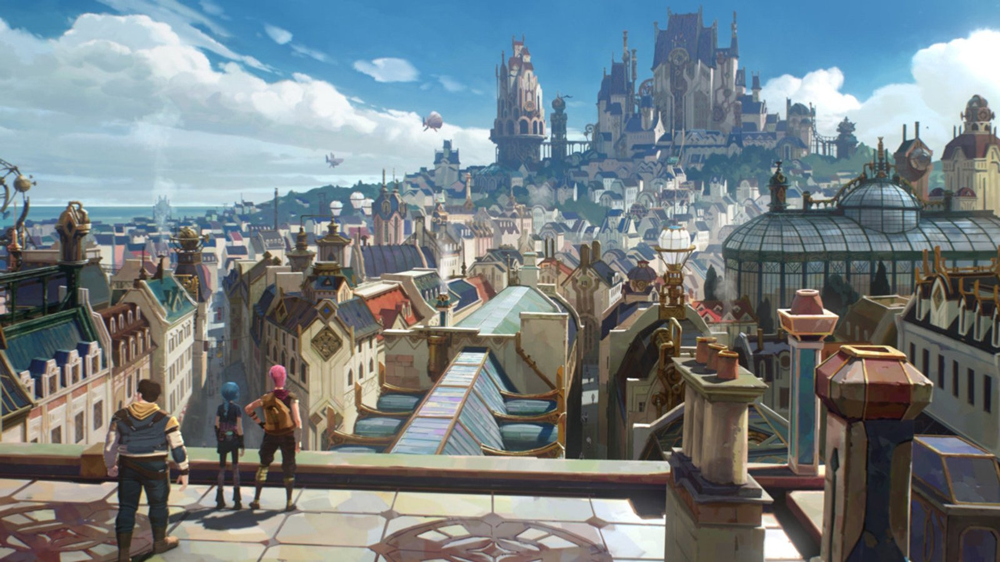
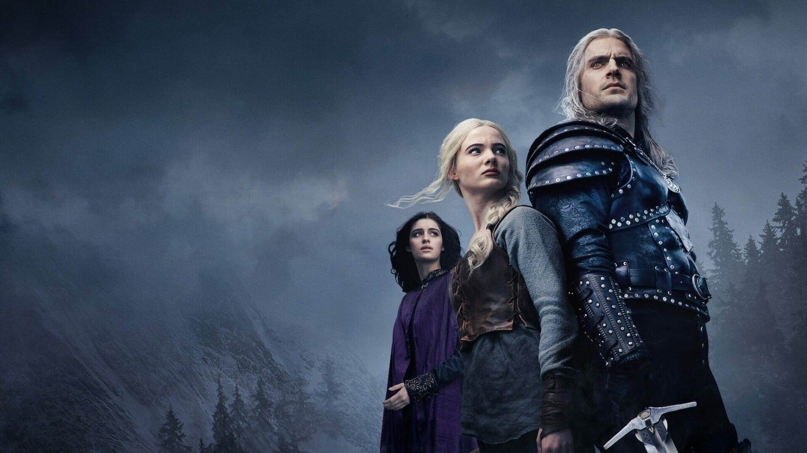
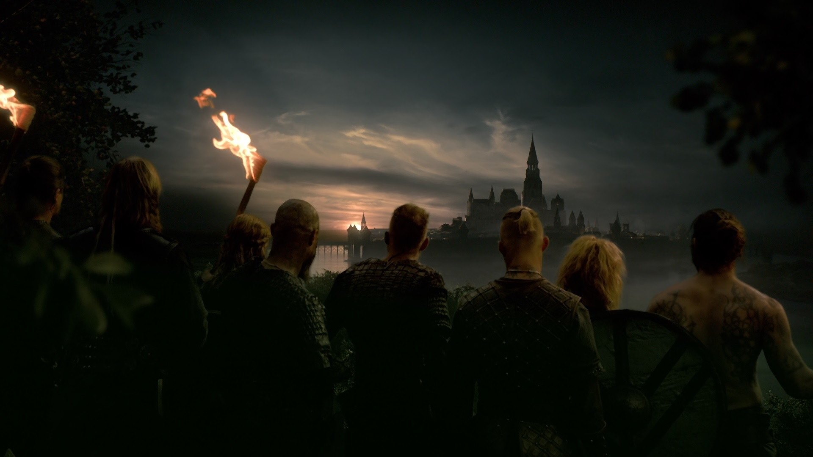
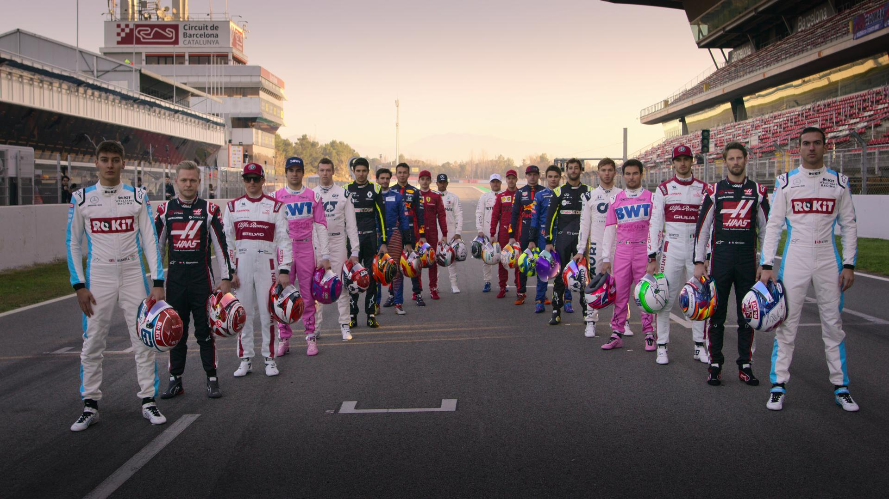
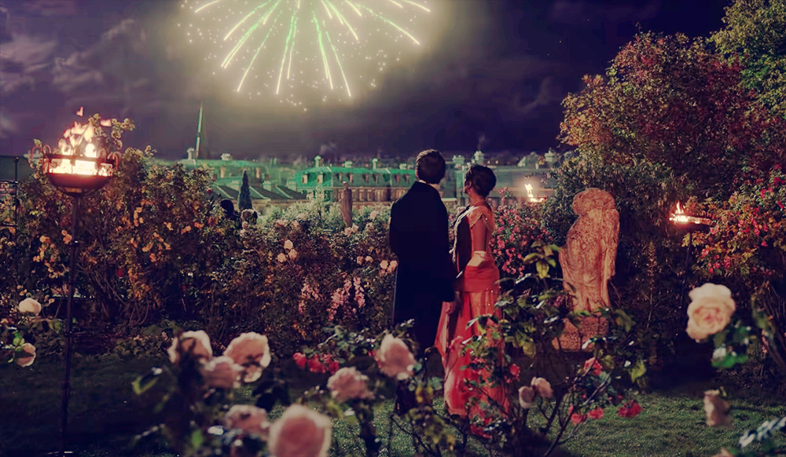

Julien Giot-Bogaerts
Last updated Sep 11, 2022
Julien Giot-Bogaerts
Last updated Sep 11, 2022
ARCANE
ARCANE, NETFLIX, S1
PEAKY BLINDERS
PEAKY BLINDERS, NETFLIX, S1
THE WITCHER
THE WITCHER, NETFLIX, S1
VIKINGS
VIKINGS, NETFLIX, S1
FORMULA 1 DRIVE TO SURVIVE
FORMULA 1 DRIVE TO SURVIVE, NETFLIX, S1
YOU
YOU, NETFLIX, S1
BRIDGERTON
BRIDGERTON, NETFLIX, S1
Arcane speelt zich af in Zaun en Piltover, twee aparte steden, nauw verbonden. De eerste duister en armer, de tweede welvarend en ontwikkeld. De twee steden zijn afhankelijk van elkaar, maar leven op voet van oorlog. Zaun ontwikkeld shimmer, een drug die de gebruiker bovennatuurlijke krachten geeft. Piltover maakt gebruik van hextech, een magische krachtbron. Verwacht dus voortreffelijke gevechten met fantastische slowmotions - ongecensureerd en grafisch.
En zo komen we bij de inwoners van de twee steden. De zussen Vi en Powder voeren de hoofdrollen, maar Arcane zit boordevol interessante personages. Allemaal even boeiend en met voldoende inhoud. Hun keuzes, of ze nu goed of slecht zijn, zijn altijd onderbouwd en logisch. Niets komt uit de lucht vallen. Het weerzien van oude personages is sterk én verrassend.
Jinx is de bom. Haar verknipte personage en onberekenbare acties maken haar tot een anti-held. Een regelrechte sociopaat. Haar mentale stabiliteit - of het ontbreken daarvan - wordt extra benadrukt door de bekraste animaties, schokkende beelden en flitsende overgangen.
Genre: Fantasieseries, Actieseries
Mooiste beelden van serie:

Tommy Shelby en zijn familie houden zich bezig met illegale gokpraktijken in het Birmingham van 1919. Wanneer zij een aantal geweren stelen, wordt inspecteur Campbell naar Birmingham gestuurd om deze terug te halen. Hij wordt vergezeld door de undercover-agent Grace.
Ondertussen krijgt Tommy mot met Billy Kimber en een groep zigeuners die The Lees worden genoemd. Thomas zet ze eerst tegen elkaar op, maar werkt daarna samen met The Lees om een sterker front tegen de Kimbers te kunnen vormen. De Blinders willen een gokvergunning verkrijgen, waardoor ze dus een legitiem bedrijf worden. Grace geraakt verzeild in Tommy zijn bedrijf, maar inspecteur Campbell houdt haar in de gaten.
Genre: Misdaadseries, Historische drama's
Mooiste beelden van serie:

Geralt van Rivia is een witcher, een lid van een uitstervende soort van gemuteerde, bovennatuurlijk sterke monsterjagers. Hij trekt als eenling door het Continent en komt aan de kost door zich in te laten huren om op monsters te jagen, zoals een kikimora en een shtriga. Zijn lot raakt verstrengeld met dat van tovenares Yennefer van Vengerberg en dat van prinses Cirilla 'Ciri' van Cintra, die door haar grootmoeder Calanthe op de vlucht wordt gestuurd wanneer Cintra wordt veroverd door Nilfgaard. De misvormde Yennefer geeft haar vruchtbaarheid op in ruil voor een magische behandeling die haar een aantrekkelijk uiterlijk oplevert. Nadat ze daar een tijd de vruchten van plukt, krijgt ze spijt en gaat ze op zoek naar een manier om toch een kind te kunnen krijgen. Ciri komt er tijdens een noodsituatie achter dat ze beschikt over magische vermogens. Zij en Geralt zijn voorbestemd om elkaar te vinden, omdat Geralt ooit om de Wet der Verrassing heeft gevraagd als beloning voor het redden van het leven van haar vader. Geen van de betrokkenen wist op dat moment dat Ciri's moeder Pavetta zwanger was, waardoor haar kind volgens deze wet Geralts beloning is. Wanneer de tijd daar is, werpt hij zich daarom op als haar beschermer.
Genre: Misdaadseries, Historische drama's
Mooiste beelden van serie:
De reeks begint aan het begin van het tijdperk van de vikingen, rond het einde van de 8e eeuw, in Scandinavië. De mannen van het Kattegat worden jaarlijks op rooftocht naar het oosten gestuurd door de earl (graaf) Haraldson. Boer Ragnar heeft echter verhalen gehoord over de "grote schatten" die in het westen te rapen vallen en wil eens graag die kant op. Van een reiziger heeft hij ook een zonnewijzer en -steen gekregen om op koers te blijven in open zee. Haraldson verbiedt het echter en dus bouwt Ragnars vriend en scheepsbouwer Floki heimelijk een langboot voor hem. Ragnar gaat tegen de wil van Haraldson in op zoek naar de veelbelovende landen en stuit zo op Engeland. Wanneer hij echter terugkeert bemerkt hij dat de graaf niet blij is met zijn wilde plannen en hem wil laten terechtstellen, Daarom geeft Ragnar de buit aan Haraldson. Ragnar blijft ondanks alles nog altijd zijn wilde plannen houden, waardoor er een confrontatie is tussen hem en de graaf, hierdoor daagt Ragnar de graaf uit tot een gevecht en doordat hij wint en Haraldson doodt, wordt hij zo zelf de graaf van Kattegat. Hierna gaat hij meermaals op plundertocht naar Engeland waar zijn rooftocht uiteindelijk wordt stopgezet door koning Egbert van Wessex. Later wordt Ragnar zelfs koning als hij de voormalige koning doodt. Ragnar besluit hierna verder door te gaan plunderen in Frankia (Frankrijk), waar zijn broer Rollo, die na een plundering achterblijft, later tegen hem samenspant en als hertog de stad Parijs verdedigt.
Genre: Politieke series, Historische drama's, Meeslepend
Mooiste beelden van serie:
Formula 1: Drive to Survive is een documentaireserie geproduceerd in een samenwerking tussen Netflix en Formula One om een kijkje achter de schermen te geven bij de coureurs en races van het Formula One World Championship. Het eerste seizoen van het Wereldkampioenschap van 2018 ging in première op 8 maart 2019, het tweede seizoen van het Wereldkampioenschap van 2019 ging in première op 28 februari 2020 en het derde seizoen van het Wereldkampioenschap van 2020 ging in première op 19 maart 2021. Een vierde seizoen over het Wereldkampioenschap 2021 Championship ging in première op 11 maart 2022. Op 5 mei 2022 werd de serie verlengd voor een vijfde en een zesde seizoen.
Genre: Docuseries, Autoseries
Mooiste beelden van serie:
Joe Goldberg is de manager van een boekwinkel in de stad New York. Tijdens zijn werk ontmoet hij Guinevere Beck, op wie hij meteen smoorverliefd wordt. Deze verliefdheid wordt al snel een obsessie en neemt vormen aan van stalking. Hij maakt gebruik van het internet om steeds meer over Beck te weten te komen, zo ook haar thuisadres. De obsessie neemt grote vormen aan en Joe wil ervoor zorgen dat Beck in zijn ogen het perfecte leven samen met hem krijg ook al moeten andere mensen hiervoor uit de weg geruimd worden, hij ontpopt zich tot een ware seriemoordenaar
Genre: Thrillerseries, Series gebaseerd op een boek
Mooiste beelden van serie:

Bridgerton volgt de Londense high society uit de 19de eeuw, met name de Bridgerton familie. Terwijl de jongere leden van deze familie op zoek naar liefde zijn en zich een weg proberen te banen door de wereld van de high society verspreidt de mysterieuze Lady Whistledown spraakmakende geruchten via haar nieuwsbrief. In ieder seizoen ligt de focus op een ander liefdesverhaal.
Genre: Romantische Dramaseries, Historische drama's
Mooiste beelden van serie:
